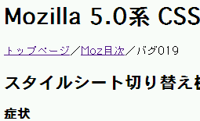
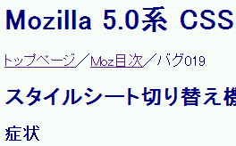

メニューのスタイルシート切り替え機能（N6では［表示＞スタイルシートを使用］）でスタイルシートを切り替えても、文字色は既定のスタイルシートでの色が使われる。
スタイルシート（一部）：
body {
margin: 2% 3% 15%;
background: #f5f5f5;
color: #000080;
}
このページではbody要素の文字色を紺色にしています。メニューで［表示＞スタイルシートを使用＞なし］を選択してスタイルシートを使わずに表示させてください。
［表示＞スタイルシートを使用＞なし］を選択した後の表示です。
Moz1.0での表示
N6.2.3での表示
Moz1.0ではブラウザのデフォルトの色指定（メニュー［編集＞設定＞表示＞配色］）が適用されます。